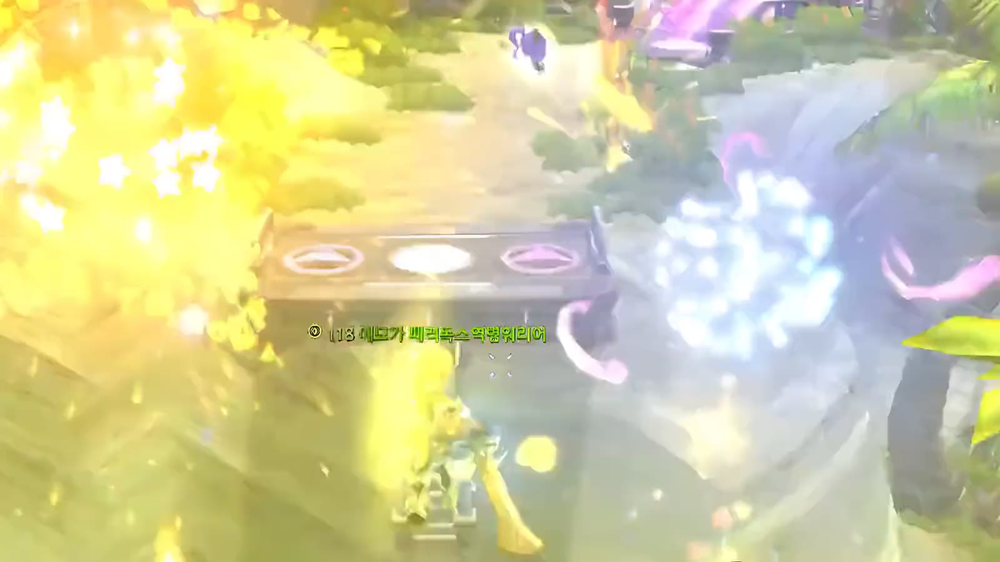

LIVE 2026.10 · 이벤트 레벨
자세히 보기
하로리 선셋 페스타
같은 코스만 반복하던 레이싱을 섬 전체를 달리는 수집 레벨로 바꿨습니다.

같은 코스만 반복하던 레이싱을 섬 전체를 달리는 수집 레벨로 바꿨습니다.

보이지 않는 감시자의 위압감을 노린 7구역 추격 레벨입니다.

땅을 뒤흔드는 지진과 광범위 공격을 콘셉트로 잡은 무협풍 보스입니다.

“전투가 밋밋하다”는 피드백을 퍼펙트 가드와 궁극기 연출로 풀었습니다.
개인 레벨은 AI로 만들고, 현업 주간 분석은 AI로 자동화했습니다.

측정 데이터가 없던 콘텐츠에 로그를 새로 넣고, 주간 분석을 AI로 자동화했습니다.
화면은 가상 데이터로 재현했습니다.
자세히 보기 →
클릭하면 새 창에서 문서가 열립니다.
회사 내부 자료라 원본 대신 공개용으로 다시 정리한 문서입니다.
게임 전문 기자로 게임사와 이용자 양쪽을 취재하며 게임을 구조로 읽는 법을 익혔습니다.
지금은 드래곤네스트 콘텐츠 파트에서 이벤트 레벨과 보스 전투를 기획해 라이브에 출시하고 있습니다.